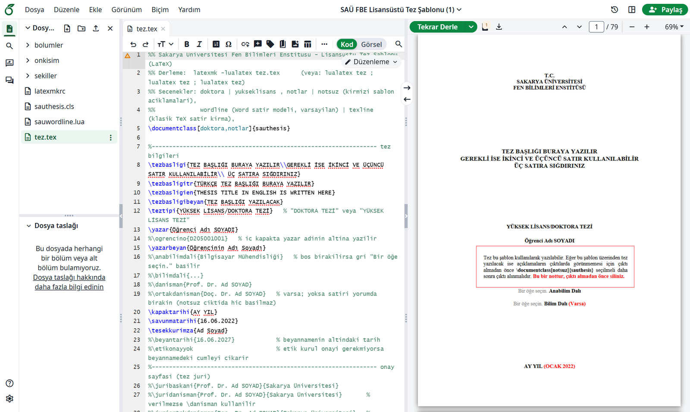
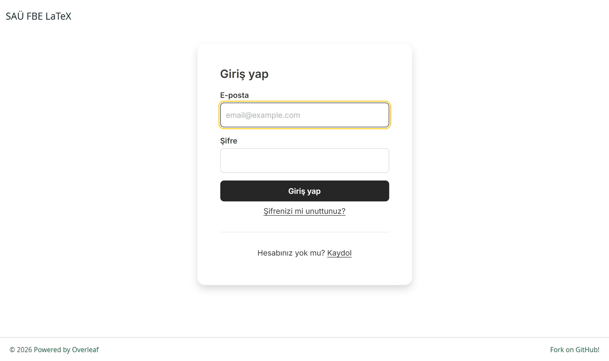
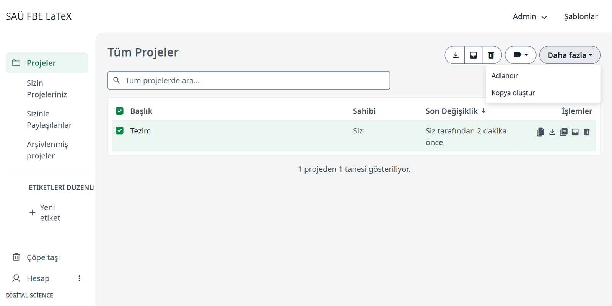
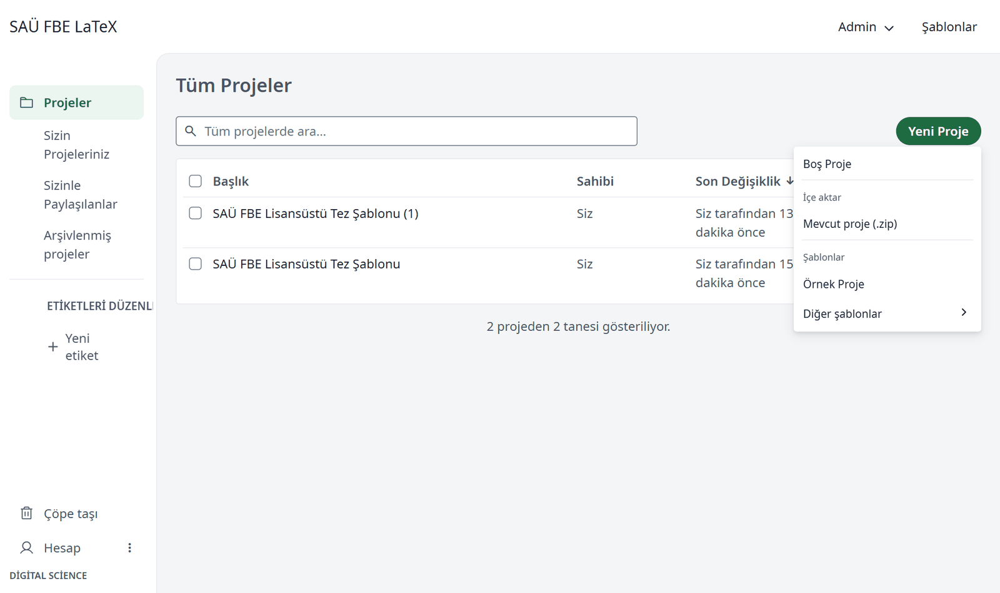
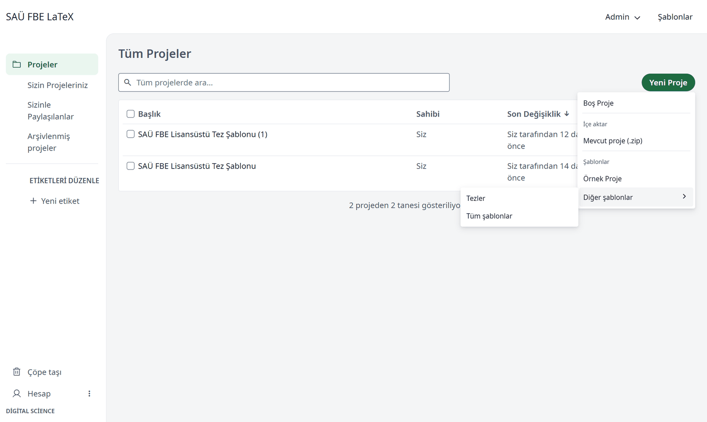
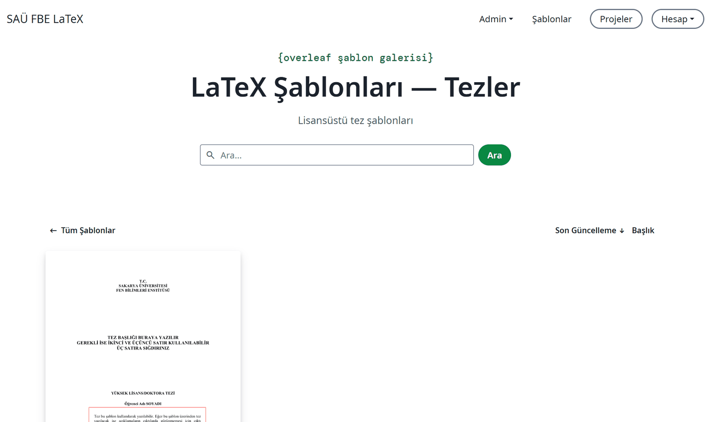
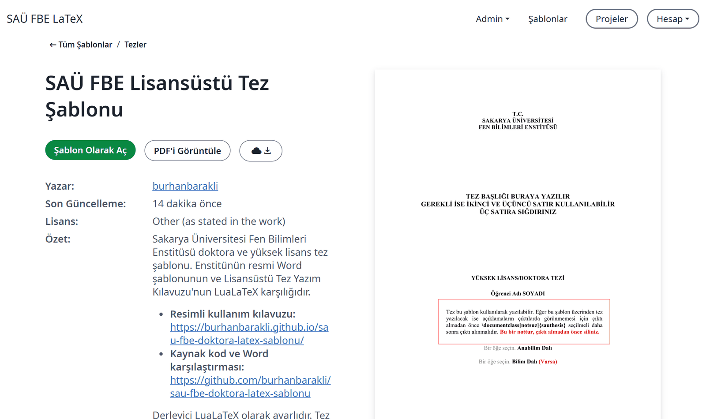
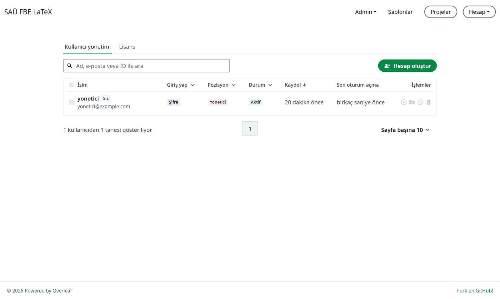
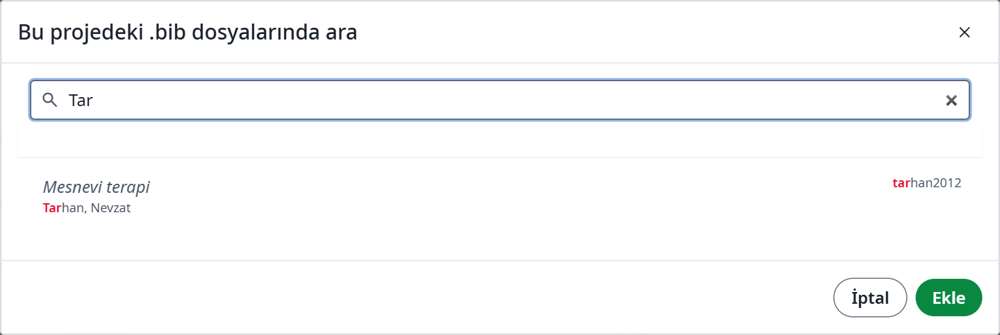
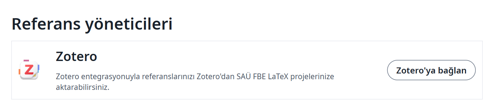

SAÜ FBE Tez Şablonu + AyakaLeaf Pro
Kurulum ve Kullanım Kılavuzu
Kendi bilgisayarınızda çalışan, Overleaf benzeri bir çevrimiçi LaTeX editörü kurar ve içine Sakarya Üniversitesi Fen Bilimleri Enstitüsü lisansüstü tez şablonunu hazır şablon olarak ekler. Kurulumdan sonra proje listenizde şablonun hazır kopyası Tezim durur: açın, adını değiştirin, yazmaya başlayın. TeX dağıtımı kurmanız gerekmez.
Nedir?
AyakaLeaf Pro, Overleaf Community Edition tabanlı, ücretsiz ve kendi bilgisayarınızda ya da sunucunuzda çalışan bir LaTeX editörüdür: ortak düzenleme, geçmiş, yorumlar, şablon galerisi. Bu depo onu tek komutla kurar ve SAÜ FBE LaTeX tez şablonunu galeriye ekler.


tez.tex, sağda LuaLaTeX ile derlenmiş PDF (79 sayfa).Sunucuda derlenen PDF, yerel LuaLaTeX çıktısıyla satır satır aynıdır (79 sayfa, Times New Roman). Tek fark: formüller Cambria Math yerine STIX Two Math ile dizilir.
Bu depo AyakaLeaf'in kendisini içermez; resmi AyakaLeaf Toolkit'ini indirir ve ayarlar. Overleaf, AyakaLeaf ve SAÜ FBE ile resmi bir bağı yoktur.
Nasıl çalışır?
http://localhost:8080Hepsi Docker kaplarında çalışır; bilgisayarınıza TeX, MongoDB ya da Redis kurulmaz. Veriler ~/ayakaleaf-toolkit/data/, ayarlar ~/ayakaleaf-toolkit/config/ klasöründedir.
kur.sh şunları yapar:
- Denetlerİşletim sistemi, Docker, bellek ve disk. Docker yoksa Linux/WSL'de kurmayı önerir.
- İndirirAyakaLeaf Toolkit'i
~/ayakaleaf-toolkitklasörüne klonlar,bin/initçalıştırır. - AyarlarAyakaLeaf Pro imajı, port 8080, Türkçe arayüz, TeX Live 2026, sandbox derleme, şablon galerisi.
- Başlatır
bin/up -d; ilk seferde imajlar iner. - YüklerYönetici hesabını oluşturur; şablonu GitHub'dan indirip LuaLaTeX ile derler ve galeride yayınlar.
- HazırlarHesapta proje yoksa şablonun kopyasını Tezim adıyla oluşturup derler. Proje varsa yeni kopya eklemez.
Gereksinimler
| Windows 10/11 | macOS | Linux | |
|---|---|---|---|
| Sanallaştırma | WSL 2 + Ubuntu; BIOS'ta sanallaştırma açık | Docker Desktop'ın desteklediği sürüm (Apple Silicon / Intel) | — |
| Docker | Docker Desktop (önerilen) ya da Ubuntu içinde Docker Engine | Docker Desktop | Docker Engine 25–29 + docker compose |
| Araçlar | Ubuntu'da git curl openssl python3 perl gawk | Command Line Tools, Homebrew, gnu-sed (betik kurar) | git curl openssl python3 perl gawk |
| Bellek / CPU | Docker'a en az 4 GB, önerilen 8 GB bellek ve 4 CPU | ||
| Disk | 50 GB boş alan: TeX Live full imajı diskte ~29 GB, uygulama ve MongoDB ~4 GB, artı projeleriniz | ||
| İnternet | Yalnızca kurulumda; sonrası çevrimdışı çalışır | ||
Kurulum: Windows
1. WSL 2 ve Ubuntu
PowerShell'i yönetici olarak açın:
wsl --install -d Ubuntuİstenirse yeniden başlatın. Başlat menüsünden Ubuntu'yu açıp Linux kullanıcı adı ve şifresi belirleyin.
2. Docker
| Docker Desktop (önerilen) | Docker Engine (Ubuntu içinde) |
|---|---|
| İndirip kurun, açın; Settings → Resources → WSL Integration'da Ubuntu'yu açıp Apply & restart. Docker Desktop açık olduğu sürece site çalışır. | Hiçbir şey kurmayın; kur.sh Docker bulamazsa kurmayı önerir (Linux şifrenizi sorar). Ücretsizdir, Windows'a bir şey kurmaz. Kurulumdan sonra Ubuntu penceresini kapatıp açın ve ./kur.sh'ı yeniden çalıştırın. |
Docker Engine yolunda: açık bir Ubuntu penceresi kalmadığında Windows WSL'i birkaç saniye sonra kapatır ve site de kapanır. Ubuntu'yu yeniden açınca kaplar kendiliğinden başlar. Tez yazarken bir Ubuntu penceresini açık bırakın ya da Docker Desktop'ı kullanın.
3. Kurulum betiği
Ubuntu terminalinde (PowerShell'de değil):
sudo apt update && sudo apt install -y git curl openssl python3 perl gawk
cd ~
git clone https://github.com/burhanbarakli/sau-fbe-ayakaleaf.git
cd sau-fbe-ayakaleaf
./kur.shBitince Windows tarayıcınızda http://localhost:8080 adresini açın.
Toolkit ve veriler Ubuntu'nun ev klasörüne kurulur (~/ayakaleaf-toolkit); /mnt/c altına kurmayın.
Kurulum: macOS
- Docker Desktop'ı kurup açın. Settings → Resources'ta en az 4 CPU / 8 GB bellek verin; Settings → Advanced → Allow the default Docker socket to be used seçeneğini açın.
- Homebrew yoksa kurun.
- Terminal'de:
cd ~
git clone https://github.com/burhanbarakli/sau-fbe-ayakaleaf.git
cd sau-fbe-ayakaleaf
./kur.shgit ilk çalıştırmada Command Line Tools kurmayı önerirse kabul edin. Betik, Toolkit'in istediği GNU sed'i Homebrew ile kendisi kurar. Bitince http://localhost:8080.
Kurulum: Linux
sudo apt update && sudo apt install -y git curl openssl python3 perl gawk
git clone https://github.com/burhanbarakli/sau-fbe-ayakaleaf.git
cd sau-fbe-ayakaleaf
./kur.shKurulum sırasında sorulanlar
- Yönetici e-postası ve şifresi: AyakaLeaf giriş bilgileriniz olur (yalnızca bu kurulumda geçerli; şifre en az 8 karakter, e-postaya benzememeli).
- Docker Engine kurulsun mu? Yalnızca Linux/WSL'de Docker yoksa sorulur.
İlk kurulum, TeX Live imajının boyutu nedeniyle bağlantınıza göre 15–60 dakika sürebilir. Sonraki başlatmalar saniyeler içinde olur. Port 8080 doluysa: AYAKALEAF_PORT=8090 ./kur.sh.
Claude ile kurulum
Claude Code'u açın (Claude masaüstü uygulamasındaki Code sekmesi ya da terminalde claude) ve aşağıdaki istemi yapıştırın. Claude her adımı denetler, kurulum komutlarını önce size gösterir; yönetici şifresini siz girersiniz.
Bilgisayarıma SAÜ FBE tez şablonu gömülü AyakaLeaf Pro kurmamı istiyorum.
Depo: https://github.com/burhanbarakli/sau-fbe-ayakaleaf (README'yi baştan sona oku ve ona göre ilerle).
1. İşletim sistemimi belirle. Windows'taysam WSL 2 ve Ubuntu kurulu mu bak (`wsl --list --verbose`); değilse kurulum komutunu bana göster, yönetici PowerShell'de benim çalıştırmamı iste.
2. Docker'ın çalıştığını doğrula (Windows'ta Ubuntu içinden `docker version`; Client ve Server görünmeli). Yoksa README'deki seçenekleri anlat ve hangisini istediğimi sor. Docker Desktop'ı ve lisans onayını bana bırak; Ubuntu içine Docker Engine kurulacaksa komutları önce göster.
3. Gereken araçları (git curl openssl python3 perl gawk; macOS'ta Homebrew ve gnu-sed) kontrol et, eksikleri onayımla kur.
4. Depoyu ev klasörüme (Windows'ta Ubuntu'nun ev klasörüne, /mnt/c altına değil) klonla ve `./kur.sh`'ı çalıştır. Yönetici e-postası ve şifresi sorulunca bana sor; şifreyi sohbete yazdırma, betiğin istemine benim girmemi iste.
5. İmajlar inerken ilerlemeyi takip et; hata olursa README'deki sorun giderme tablosuna ve `bin/docker-compose logs` çıktısına göre düzelt.
6. Bitince http://localhost:8080/templates/thesis adresinde şablonun, proje listesinde de hazır "Tezim" projesinin durduğunu doğrula ve bana günlük kullanım komutlarını (bin/start, bin/stop) özetle.İlk giriş
http://localhost:8080 adresinde kurulumda verdiğiniz yönetici e-postası ve şifresiyle giriş yapın. Arayüz Türkçedir.


Hazır proje: Tezim
Girişten sonra proje listenizde Tezim hazır durur; şablonun derlenmiş bir kopyasıdır. Yeni proje oluşturmanıza gerek yoktur:
- Satırın onay kutusunu işaretleyin, Daha fazla → Adlandır ile adını değiştirin (ya da projeyi açıp üstteki proje adına tıklayın).
- Projeye tıklayıp açın ve
tez.tex'ten başlayarak bilgilerinizi yazın.


Arşivlenmiş projeler'deki “SAÜ FBE Lisansüstü Tez Şablonu” galerinin kaynağıdır ve şablon güncellenince silinir. Tezinizi onun içine değil, Tezim'e yazın.
Galeriden yeni kopya
İkinci bir proje ya da başka bir kullanıcı için şablonun yeni bir kopyasını galeriden açın. (Hazır Tezim projesi yalnızca yönetici hesabına konur.)
1. Yeni Proje → Diğer şablonlar → Tezler




Üst menüdeki Şablonlar bağlantısı ya da doğrudan localhost:8080/templates/thesis da aynı sayfayı açar.
2. Galeride şablonu seçin


3. Şablon Olarak Aç


Proje editörde açılır; derleyici LuaLaTeX olarak ayarlıdır ve ilk derleme kendiliğinden başlar (yukarıdaki editör görüntüsü). Galerideki şablon değişmez.
Tezi yazma
| Dosya / klasör | İçerik |
|---|---|
tez.tex | Tez başlığı, adınız, anabilim dalı, danışman, jüri ve bölüm sırası |
onkisim/ | Teşekkür, özet, summary, kısaltmalar, simgeler |
bolumler/ | Bölümler, kaynaklar, ekler, özgeçmiş |
sekiller/ | Görseller (dosya ağacına sürükleyip bırakın) |
sauthesis.cls, sauwordline.lua | Biçim kuralları; değiştirmeyin |
- Tekrar Derle (Ctrl+S / Ctrl+Enter) ile PDF'i görün, indirme simgesiyle PDF'i alın.
- Paylaş ile danışmanınızı projeye ekleyin; aynı anda düzenleyip yorum yazabilirsiniz.
- Teslimden önce
tez.tex'in ilk satırındanotlaryerinenotsuzyazın.
Her komutun ne yaptığı ve hangi sayfayı değiştirdiği numaralı görsellerle şablon kılavuzunda.
Kullanıcı ekleme
Yönetici olarak sağ üstte Admin → Kullanıcı yönetimi → Hesap oluştur ile öğrencileri ve danışmanları ekleyin. Yeni kullanıcılar kendi kopyalarını galeriden açar.


Varsayılan kurulum yalnızca bu bilgisayardan erişime izin verir (127.0.0.1). Ağdaki başka bilgisayarların kullanması için config/overleaf.rc'de OVERLEAF_LISTEN_IP, config/variables.env'de OVERLEAF_SITE_URL değiştirilmeli; güvenlik duvarı ve HTTPS ayarlanmalıdır. Paylaşılan bir sunucu için Linux kurulumunu ve AyakaLeaf belgelerini izleyin.
Kaynaklar, Zotero ve Mendeley
Şablonda kaynakça iki yolla yazılır (örnekler: şablon kılavuzu → Atıflar ve kaynaklar):
- Elle (varsayılan):
bolumler/kaynaklar.tex'e her kaynak için\kaynak{...}(APA) ya da\begin{kaynaklistesi} \item … \end{kaynaklistesi}(numaralı [1]). Metin içi atıflar da elle:(Baran, 2003),[1]. - .bib dosyasından: kaynak listesi ve atıflar Zotero, Mendeley ya da JabRef'ten gelen
.bibdosyasından üretilir; sıralama, “ve ark.” ve kılavuz biçimi kendiliğinden olur.
.bib ile yazmak
tez.tex'in başındaki satırların%işaretini silin:%\newcommand\kaynakduzeni{numarali} % numaralı [1] düzen için bunu da açın \input{bib-ayar} \addbibresource{zotero.bib}bolumler/kaynaklar.tex'in içeriğini şununla değiştirin:\bolumsuz{KAYNAKLAR} \printbibliography[heading=none]- Metinde
\textcite{anahtar}→ Baran (2003),\parencite{anahtar}→ (Baran, 2003), numaralı düzende\cite{anahtar}→ [1] yazın ve Derle'ye basın. biber kendiliğinden çalışır.
Projenizde bib-ayar.tex yoksa proje bu dosya eklenmeden önceki şablon sürümünden açılmıştır. Dosyayı GitHub'dan indirip Yeni Dosya → Yükle ile ekleyin. Galeriyi güncellemek için ./kur.sh --sablon.
Kaynak arama (Ctrl+Space)
\parencite{ (ya da \cite{, \textcite{) yazıp Ctrl+Space'e basın. Açılan pencerede yazar, başlık ya da anahtarın birkaç harfini yazın ve Ekle'ye basın. Ayar gerektirmez.


tarhan2012 bulunur..bib dosyasını projeye almak
| Yol | Nasıl |
|---|---|
| Zotero bağlantısı | Yönetici bir kez açar (aşağıda). Sonra Hesap → Hesap Ayarları → Referans yöneticileri → Zotero'ya bağlan. Projede Yeni Dosya → Zotero'dan → ad zotero.bib, kütüphane ya da grup → Oluştur. Zotero'da değişiklikten sonra dosyayı açıp Yenile. |
| Mendeley bağlantısı | Aynı adımlar: Mendeley'e bağlan, Yeni Dosya → Mendeley'dan. |
| Zotero + Better BibTeX | Bağlantı açık değilse: bilgisayarınızda Zotero'ya Better BibTeX kurun, koleksiyonu Better BibLaTeX olarak dışa aktarın, Yeni Dosya → Yükle. Kaynak ekledikçe yeniden yükleyin. |
| Mendeley, JabRef, EndNote | BibTeX ya da BibLaTeX olarak dışa aktarıp Yükle. |


Bağlantıyla gelen .bib editörde salt okunurdur ve yalnızca onu ekleyen kişi yenileyebilir; projeyi paylaştığınız danışman görür ama yenileyemez. Özellik AyakaLeaf'te beta durumundadır. Zotero'dan seçeneği Yeni Dosya penceresinde yalnızca hesabınız bağlandıktan sonra görünür.
Bağlantıyı açmak (yönetici, bir kez)
- Zotero: zotero.org/oauth/apps → Register a new application. Tür Browser, Callback URL
http://localhost:8080/user/zotero/oauth/callback. Client Key ve Client Secret'ı not edin.
Mendeley: dev.mendeley.com/myapps.html → yeni uygulama, Redirect URLhttp://localhost:8080/user/mendeley/oauth/callback, akış Elsevier. ID ve Secret'ı not edin. - Bu depo klasöründe
kur.sh'ı anahtarlarla yeniden çalıştırın (kurulum ve projeler korunur):
Mendeley içinZOTERO_CLIENT_ID=... ZOTERO_CLIENT_SECRET=... ./kur.shMENDELEY_CLIENT_ID=... MENDELEY_CLIENT_SECRET=...ekleyin. Betikconfig/variables.env'e gerekli satırları yazar ve sunucuyu yeniden başlatır.
Sunucunun internete açık olması gerekmez; bağlanma tarayıcınız üzerinden olur, sunucunun yalnızca zotero.org'a ve Mendeley'e erişebilmesi yeterlidir. Ayrıntı: AyakaLeaf belgeleri, Zotero ve Mendeley.
Diğer eklentiler
AyakaLeaf Pro'da şu özellikler de vardır. kur.sh bunları ayarlamaz; açmak için AyakaLeaf belgelerine bakın.
| Özellik | Ne işe yarar |
|---|---|
| GitHub / GitLab / Gitea eşitleme | Projeyi bir Git deposuyla iki yönlü eşitler (sürüm geçmişi ve yedek). |
| Dropbox eşitleme | Proje dosyalarını Dropbox klasörüyle eşitler. |
| MCP sunucusu | Claude Code gibi yapay zekâ araçlarının projeyi okuyup düzenlemesine ve derlemesine izin verir. |
| Yapay zekâ asistanı | Proje hakkında sohbet ve derleme hatalarını açıklama. |
Günlük kullanım
Windows'ta önce Docker Desktop'ı açın (Docker Engine yolundaysanız bir Ubuntu penceresi açmanız yeter; kaplar kendiliğinden başlar). Komutlar ~/ayakaleaf-toolkit klasöründe çalışır:
| İş | Komut |
|---|---|
| Başlat | bin/start |
| Durdur (veriler kalır) | bin/stop |
| Ayar değişikliğini uygula | bin/up -d |
| Durum | bin/docker-compose ps |
| Uygulama günlüğü | bin/docker-compose logs --tail=100 sharelatex |
| Derleyici günlüğü | bin/logs -f clsi |
Şablonu güncelleme ve yedek
GitHub'daki şablona yeni sürüm geldiğinde, sunucu çalışırken bu deponun klasöründe:
./kur.sh --sablonGalerideki şablon yeni sürümle değişir; Tezim ve daha önce açılmış tez projeleri etkilenmez, yeni hazır proje de eklenmez.
Yedek: ~/ayakaleaf-toolkit/config/ ve ~/ayakaleaf-toolkit/data/ bütün verilerinizdir; kopyalamadan önce bin/stop ile durdurun. Ayrıca her projeyi Menü → Kaynak olarak indir (.zip) ile alabilirsiniz.
Sorun giderme
| Belirti | Çözüm |
|---|---|
docker: command not found / Cannot connect to the Docker daemon (Windows) | Docker Desktop açık mı, WSL Integration'da Ubuntu açık mı? Ubuntu penceresini kapatıp açın. Docker Engine yolunda: sudo service docker start. |
permission denied ... docker.sock | sudo usermod -aG docker $USER, sonra terminali kapatıp açın. Soketin iznini 777 yapmayın. |
| Site, Ubuntu penceresini kapatınca açılmıyor (Windows, Docker Engine) | Beklenen durum; Ubuntu'yu açın, kaplar birkaç saniyede başlar. Sürekli açık kalması için Docker Desktop. |
sed: illegal option (macOS) | export PATH="$(brew --prefix gnu-sed)/libexec/gnubin:$PATH" ve ./kur.sh'ı yeniden çalıştırın. |
Mounts denied (macOS) | Toolkit'i /Users/... altında tutun ya da Docker Desktop → File sharing'e klasörü ekleyin. |
| Sayfa açılmıyor | İlk açılış birkaç dakika sürebilir: bin/docker-compose logs --tail=100 sharelatex. |
| MongoDB açılmıyor | Docker çekirdeği 6.19–7.0.13 ise kur.sh geçici çözümü ekler; Docker Desktop'ı güncelleyin. |
| Yeni Dosya'da “Zotero'dan” yok | Önce Hesap Ayarları → Zotero'ya bağlan. Ayarlarda Referans yöneticileri yoksa bağlantı açılmamıştır: Bağlantıyı açmak. |
| Atıf yerine anahtar çıkıyor, kaynakça boş | \addbibresource'taki ad .bib dosyasıyla aynı mı, anahtar .bib'de var mı? Zotero dosyasını Yenile, sonra yeniden derleyin. |
| Şablon galeride yok | Sunucu çalışırken ./kur.sh --sablon. |
Ayrıntılı kurulum sorunları: AyakaLeaf'in Windows ve macOS sorun giderme sayfaları. Hata bildirmek için GitHub Issues.